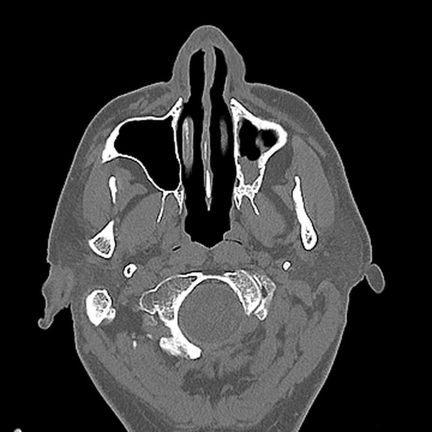

Andrii Mikhalov, медицинско досие
Andrii Mikhalov, медицинско досиеНос и параназални синуси
Заключение на рентгенолога (основен документ)
Заключение на рентгенолога, КТ на параназалните синуси и ортопантомограма, 2024 (Odrex). Заключение: КТ признаци на хроничен максиларен синузит на левия максиларен синус. (КТ на параназалните синуси и ортопантомограма, заключение на рентгенолог, 2024, PDF, 136 KB)
Проблемът е само в левия максиларен синус.
- Ляв максиларен синус: неравномерно удебеляване на лигавицата до 10 мм с минимално количество съдържимо край стените; следоперативен дефект на медиалната стена до 8 мм; деформация на предната и задно-латералната стена, дефект на предната стена до 5 мм; ремоделиране на стените; изтъняване на долната стена до 3 мм в областта на отстранени зъби.
- Ляв преден остиомеатален комплекс: блокиран (десен: проходим). Носна преграда: изкривяване не е отбелязано. Останалото е както в заключението.
- Препоръки в заключението: консултация с ЛОР, консултация със зъболекар.
Септопластика, 2013
Септопластика (субмукозна резекция) за изкривена носна преграда, J34.2, в частна болница в Истанбул, Турция. Приет през 2013 г. с дългогодишна запушеност на носа, главоболие и носен секрет. Под обща анестезия изкривената част на септалния хрущял и костният гребен на дъното на преградата са отстранени през разрез; двете ноздри са тампонирани. Една нощ в болницата, тампоните са свалени, изписан с медикаментозно лечение и 10 дни почивка. Епикриза (epikriz) на турски. (Епикриза след септопластика (епикриза, на турски), 2013, JPG, 1,1 MB)
Консултация с ЛОР, 2016
Частна клиника в Одеса. Окончателна диагноза: вазомоторен ринит. Препоръчано: рентгенова снимка на параназалните синуси, пълна кръвна картина с кръвна захар и съсирване, изследване на урина, ЕКГ. Ръкописна бележка. (Бележка от ЛОР консултация, ръкописно, 2016, JPG, 2,0 MB)
Отстраняване на зъбен корен и ревизия на левия максиларен синус, 2016
Отстраняване на остатък от зъбен корен и ревизия на левия максиларен синус (няма епикриза). КТ от 2024 г. показва следоперативен дефект на медиалната стена на левия максиларен синус до 8 мм. Документи: дентални КТ изображения, снимка на шевовете на горното небце и ръкописната рецепта на зъболекаря-хирург (Dalacin C 300 mg два пъти дневно за 5 дни, Suprastin, Nimesil, разтвор за изплакване Givalex, Linex; ръкописна бележка за капки за нос, частично четлива). Също: ръкописен списък на лекарства и разтвори (снимка от 2016 г.) и ръкописен картон на пациент при зъболекар (снимка от 2016 г.). (Дентален КТ, срезове на челюстите, ляв максиларен синус, 2016, JPG, 372 KB, Горно небце с конци, JPG, 702 KB, Рецепта от зъболекар-хирург, ръкописно, 2016, JPG, 330 KB, Списък на лекарства и разтвори, ръкописно (дата на снимката), 2016, JPG, 78 KB, Картон на пациент при зъболекар, ръкописно (дата на снимката), 2016, JPG, 2,0 MB)
Препоръка на ЛОР, 2024
През 2024 г. ЛОР специалист диагностицира хроничен ляв максиларен синузит и препоръча планова ендоскопска лява максилотомия (ревизия). Тя не е извършена по причини, несвързани с медицината. Консултацията със зъболекар, препоръчана в заключението на рентгенолога за КТ от 2024 г., също не се е състояла по същите причини.
Редукция на долните носни раковини
В Odrex се обсъждаше редукция на долните носни раковини. Исках да се направи със студена плазма. Беше споменато, но не се препоръча. Една от лекарките каза, че се опасява от синдром на празния нос.
Ключови КТ изображения, 2024
Представителни срезове от КТ на параназалните синуси, 2024 (JPEG, за бърз преглед). Те не заменят заключението на рентгенолога. Пълното изследване е в DICOM архива по-долу.




Всички изследвания и документи
- 2024: КТ на параназалните синуси (DICOM), заключение на рентгенолога от 2024 г., направление от ЛОР за КТ, консултации с ЛОР. (КТ на параназалните синуси, 2024, ZIP, 395,1 MB, нужен DICOM-визуализатор, ЛОР направление за КТ на синусите (Odrex), 2024, JPG, 447 KB, ЛОР консултация, 2024, PDF, 647 KB, ЛОР консултация, 2024, PDF, 643 KB)
- 2016: КТ на параназалните синуси, КТ на главата 3D, дентален CBCT (два архива), ориентировъчна снимка на черепа, консултации с ЛОР. (КТ на параназалните синуси, 2016, ZIP, 232,3 MB, нужен DICOM-визуализатор, КТ на главата, 3D, 2016, ZIP, 62,3 MB, нужен DICOM-визуализатор, Дентален CBCT, част 1, 2016, ZIP, 287,7 MB, нужен DICOM-визуализатор, Дентален CBCT, част 2, 2016, ZIP, 283,9 MB, нужен DICOM-визуализатор, КТ на черепа, странична ориентировъчна снимка, 2016, JPG, 36 KB)
- 2013: КТ на параназалните синуси (DICOM), консултация с ЛОР, видеа от 2013 г. (КТ на параназалните синуси, 2013, ZIP, 289,7 MB, нужен DICOM-визуализатор, ЛОР консултация, изкривена носна преграда, 2013, JPG, 351 KB, Видео, 2013, MP4, 6,1 MB, Видео, 2013, MP4, 2,5 MB)
- Панорамна рентгенография и ортопантомограма. (Дентална панорамна рентгенография, BMP, 4,1 MB, Ортопантомограма от диск, ZIP, 2,2 MB, нужен DICOM-визуализатор)
Всички файлове са и на страницата Документи. Архивите с изображения се отварят във всяка DICOM програма за преглед.
← Назад